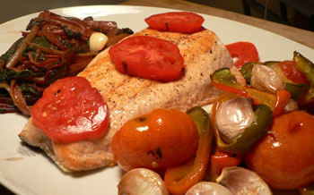
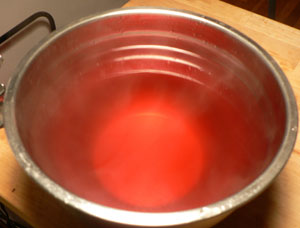

Hurricane salmon
Summer certainly feels over in New York today. It’s cold, windy, and rainy. Evil Ernesto kept us from our annual trip to Chapel Hill, North Carolina (see you next month, Molly!), and the only things that make me feel better are tomatoes and salmon.
So I invited Emily B for dinner and made this:
I got a basket of cute little tomatoes at the Greenmarket this morning as well as the red chard and a colorful sweet pepper. I roasted a few of the tomatoes (saving the others for eating raw) with the sliced pepper and some garlic cloves in a 300º oven for about an hour, until they were spoon tender. In the meantime, I blanched the chard and then braised it in beef stock and red wine, starting the stems about twenty minutes before the leaves. I did the salmon at the last minute, searing both sides in hot oil until they got crispy.
After blanching the stems, I had this amazing broth to deal with:
Not one to let anything red go to waste, I made risotto. It, of course, did not turn out red. It was more of a grayish pink, and other than being good it didn’t taste all that special. Nevertheless, bright red stock must be strained and put to use.
A nasty day can make you hungry, and we attacked the platter like wolves, squeezing the roasted garlic from its skin and spreading it on bread, and smashing our roasted tomatoes on top of our risotto. Summer may feel over, and my cherished West Village pool might be closed for the season, but I still have tomatoes to eat, and I am happy to be able to put the oven on again.
Comments
I always hate to see summer go but on the other hand it feels good to be able to do things I haven’t done all summer, like make soup.
Your meal looks like a delicious thing to eat on a stormy day.
Mmm… looks wonderful.
I made an excellent stirfry tonight with some fresh peppers from the garden. Unless we get a really early freeze, it looks like I’ll have tons of habanero peppers. More than I could ever use. Would you be interested in getting some hot peppers from my garden?
During this delicious meal, we discussed the prononciation of chard and could not seem to agree on whether it is pronounced chard (like cheddar) or shard. Any insight, foodies?
We always use the former pronunciation; I have never heard it pronounced any other way.
Saying “shard” tends to roll off the tongue more easily than the hard “chard”, in my opinion. However, you’re quite correct: the “ch” is the same as in “cheddar”. To make sure, I just checked with Webster to substantiate that claim, and he agrees. Pity!
Add a comment